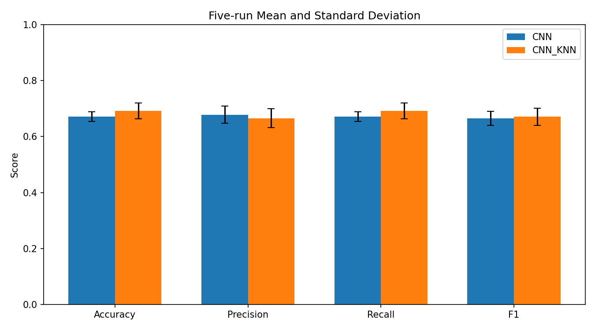
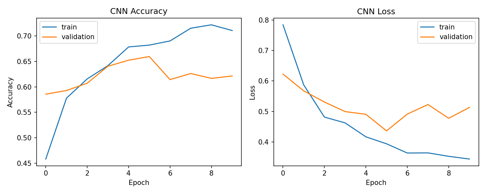
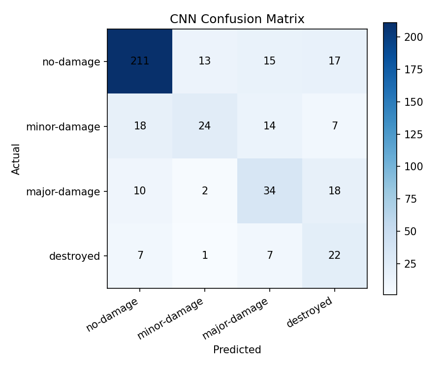
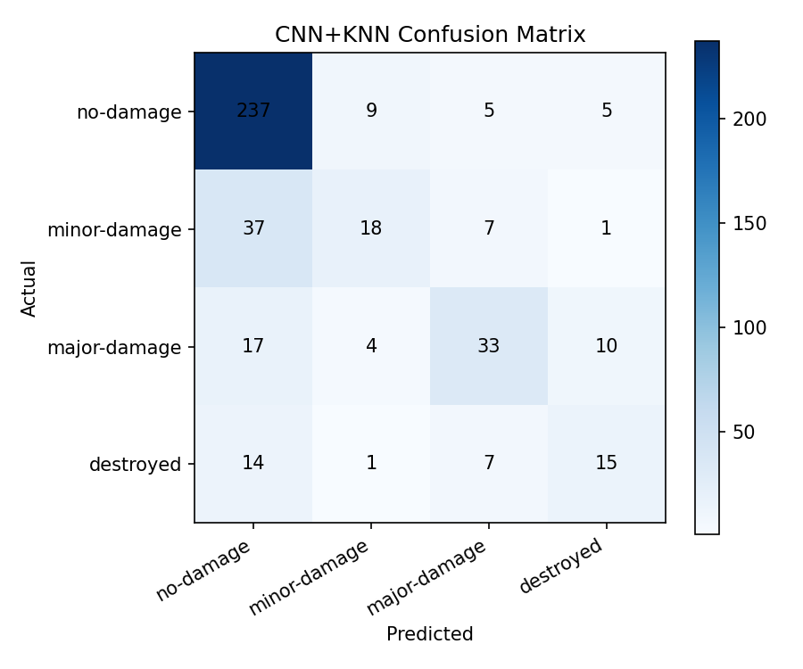

EarthScan AI
AIL 201 Project
Satellite building damage predictor
Upload pre and post-disaster satellite imagery to assess structural damage severity with the final trained CNN and CNN+KNN models
✓ Loaded
Pre-Disaster
Before disaster image
PNG · JPG · TIF accepted
✓ Loaded
Post-Disaster
After disaster image
PNG · JPG · TIF accepted
Select model
Use high-resolution satellite imagery only · Results are AI-generated estimates
Pre-disaster
Post-disaster
Pre/Post Change Heatmap
Red / yellow: high visual change, possible damaged area
Green / cyan: moderate visual change
Blue / purple: low visual change
CNN MODEL
Waiting for upload
No damage0%
Minor0%
Major0%
Destroyed0%
5-run accuracy
67.10% +/- 1.73%
CNN + KNN MODEL
Waiting for upload
No damage0%
Minor0%
Major0%
Destroyed0%
5-run accuracy
69.14% +/- 2.84%
Model confidence comparison
Upload pre and post-disaster images to generate real model predictions.
About this project
This tool uses deep learning to assess building damage severity from pre and post-disaster satellite imagery. Built for AIL 201 — Artificial Intelligence Lab as a final project.
2,799
Pre/post pairs
4
Damage classes
69.14%
CNN+KNN 5-run accuracy
How it works
1
Upload satellite images
Provide pre and post-disaster imagery of the affected area
2
Preprocessing
Images are resized to 256×256px, normalized, and combined as a 6-channel pre/post input
3
CNN feature extraction
A Siamese MobileNetV2-based CNN extracts temporal damage features from the paired images
4
Damage classification
CNN and CNN+KNN predict one of 4 damage levels with confidence scores
Dataset
Name
xBD (xView2 Challenge Dataset)
Source
Kaggle / DigitalGlobe Maxar
Total images
2,799 labeled pre/post image pairs
Image size
1024 × 1024 raw images, resized to 256 × 256 for model input
Disaster types
Flooding, wind, fire, earthquake, tsunami, and volcano events
Damage scale
No damage, minor damage, major damage, destroyed
Evaluation Visualizations
These Matplotlib charts are generated from the final 5-run evaluation and best backend run. They are included for the report, viva, and model-performance review.



